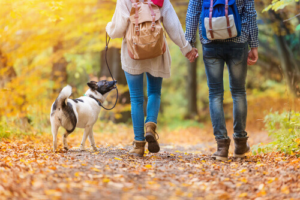

Ao longo da história, diversas raças se desenvolveram e se adaptaram às necessidades, sendo parceiras do homem. A criação dos cães de raça pura deve ser responsável, com devido estudo e reprodução adequada, observando sempre a saúde e o bem-estar do animal. Portanto, para garantir que a parceria histórica entre humanos e cães ganhe cada vez mais capítulos, é preciso que o proprietário seja extremamente responsável antes mesmo de adquirir um cão de raça.
Adquirir um cão de raça pura requer estudo do proprietário, começando pela escolha de um criador responsável. Certifique-se de atender às necessidades do cão no espaço de convivência, estar financeiramente preparado e ter acesso a cuidados veterinários. Cada raça tem características específicas a considerar para garantir uma vida feliz ao animal.

Adotar um pet não pode ser baseado apenas no querer. O conceito de adoção responsável foi criado com o intuito de conscientizar futuros adotantes sobre as responsabilidades que envolvem ter um animal de estimação. Por isso, antes de adotar, a pessoa é informada sobre as responsabilidades e o compromisso com esse pet que vai além dos itens básicos